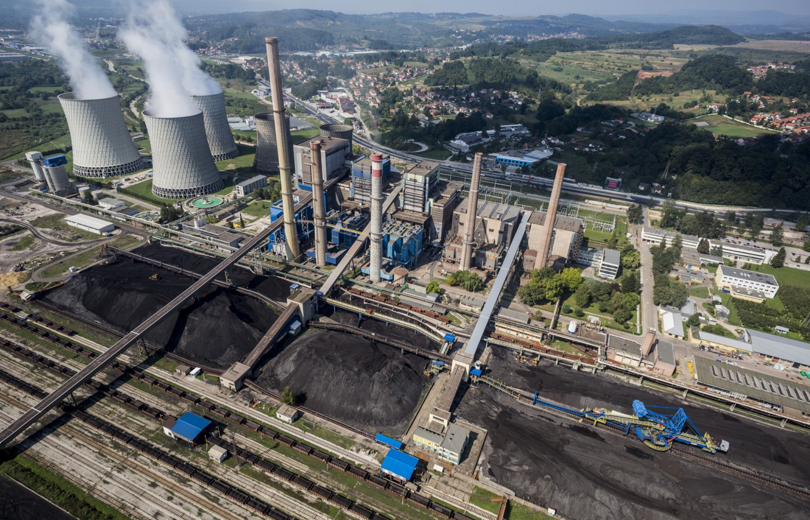
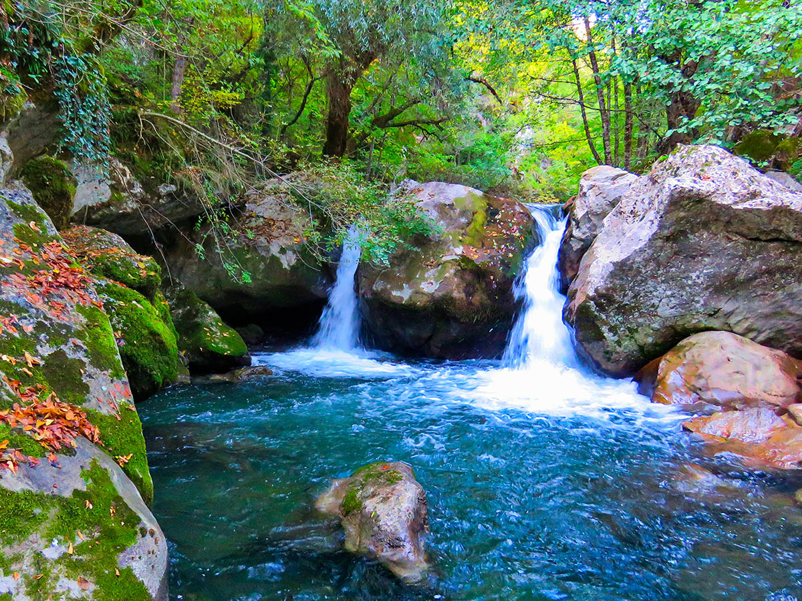
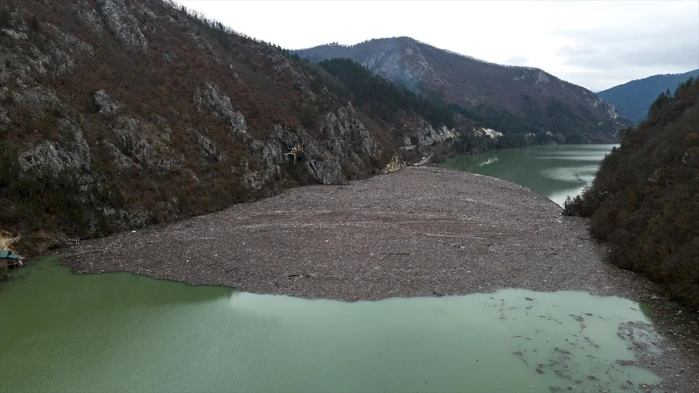
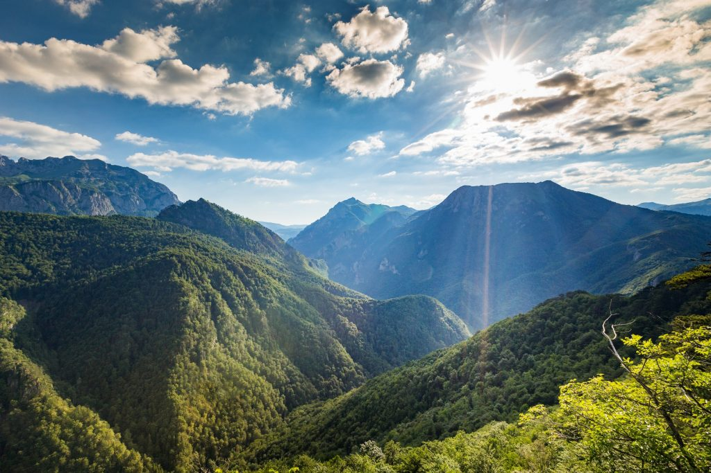
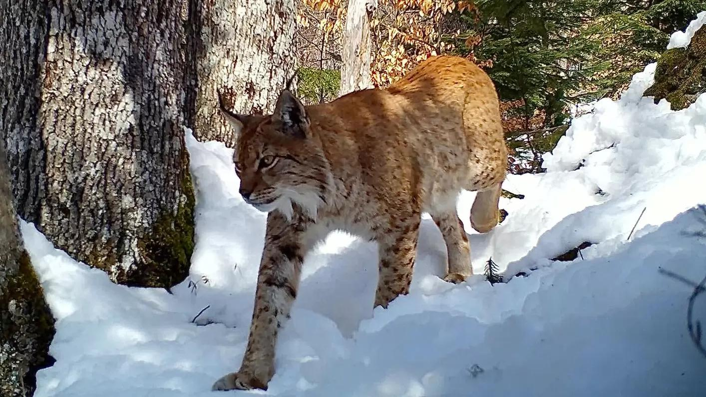
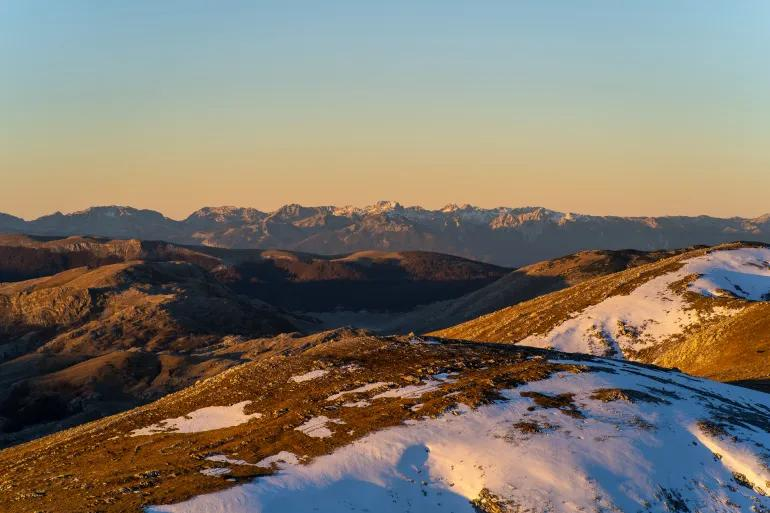
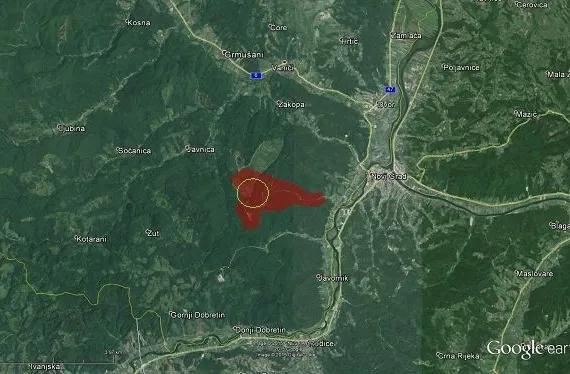
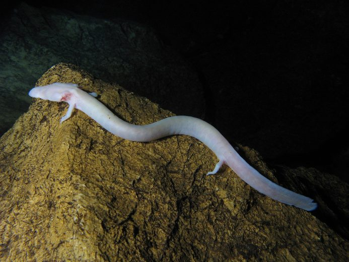
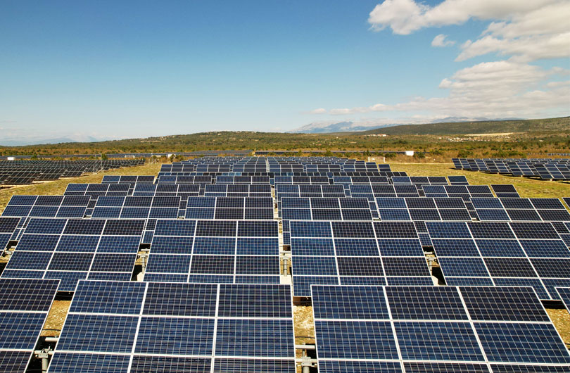

Zagađenje zraka u Tuzli i Sarajevu
Tokom zime, nivo PM2.5 čestica u ovim gradovima često premašuje globalne rekorde.
Zagađenje
🌎 Ekološki portal - 2026
Pratite ekološke indikatore, saznajte svoj ekološki otisak i doprinesite promjeni.

Tokom zime, nivo PM2.5 čestica u ovim gradovima često premašuje globalne rekorde.
Zagađenje

Borba lokalnih zajednica protiv projekata koji ugrožavaju riječne ekosisteme i pitku vodu.
Vode

Hiljade tona plutajućeg otpada ugrožavaju biodiverzitet i rad hidroelektrana na istoku zemlje.
Zagađenje
Vode

Očuvanje jedne od posljednjih prašuma u Evropi unutar Nacionalnog parka Sutjeska.
Šume

Rijetki snimci potvrđuju prisustvo ove ugrožene vrste u planinskim predjelima BiH.
Fauna

Klimatske promjene skraćuju skijašku sezonu i mijenja floru na olimpijskim planinama.
Klima

Potencijalna izgradnja odlagališta na Trgovskoj gori prijeti slivu rijeke Une.
Zagađenje

Zaštita kraških pećina i podzemnih voda u kojima živi ovaj jedinstveni vodozemac.
Fauna

Sve veći broj fotonaponskih elektrana u okolini Mostara kao prelaz na čistu energiju.
Klima